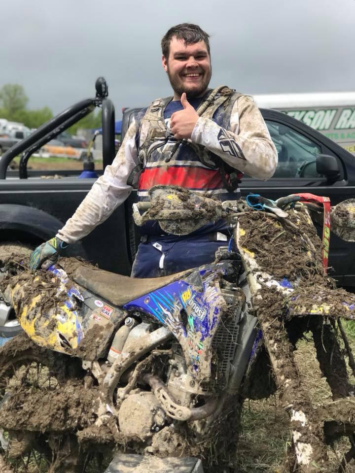
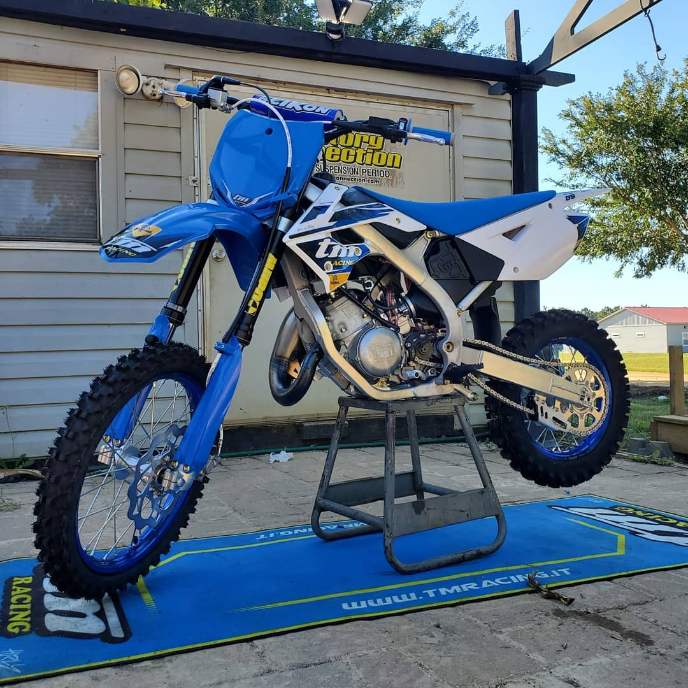
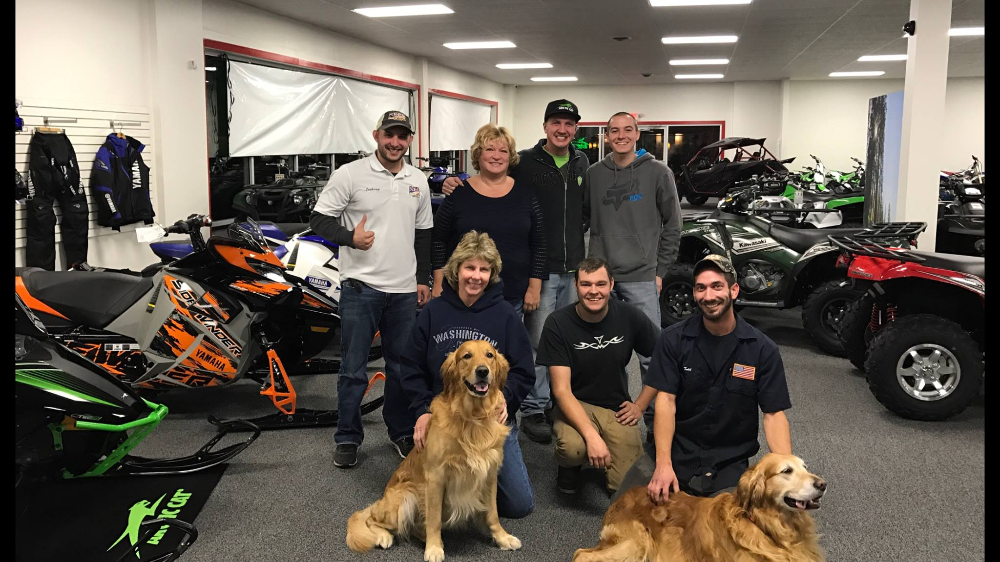
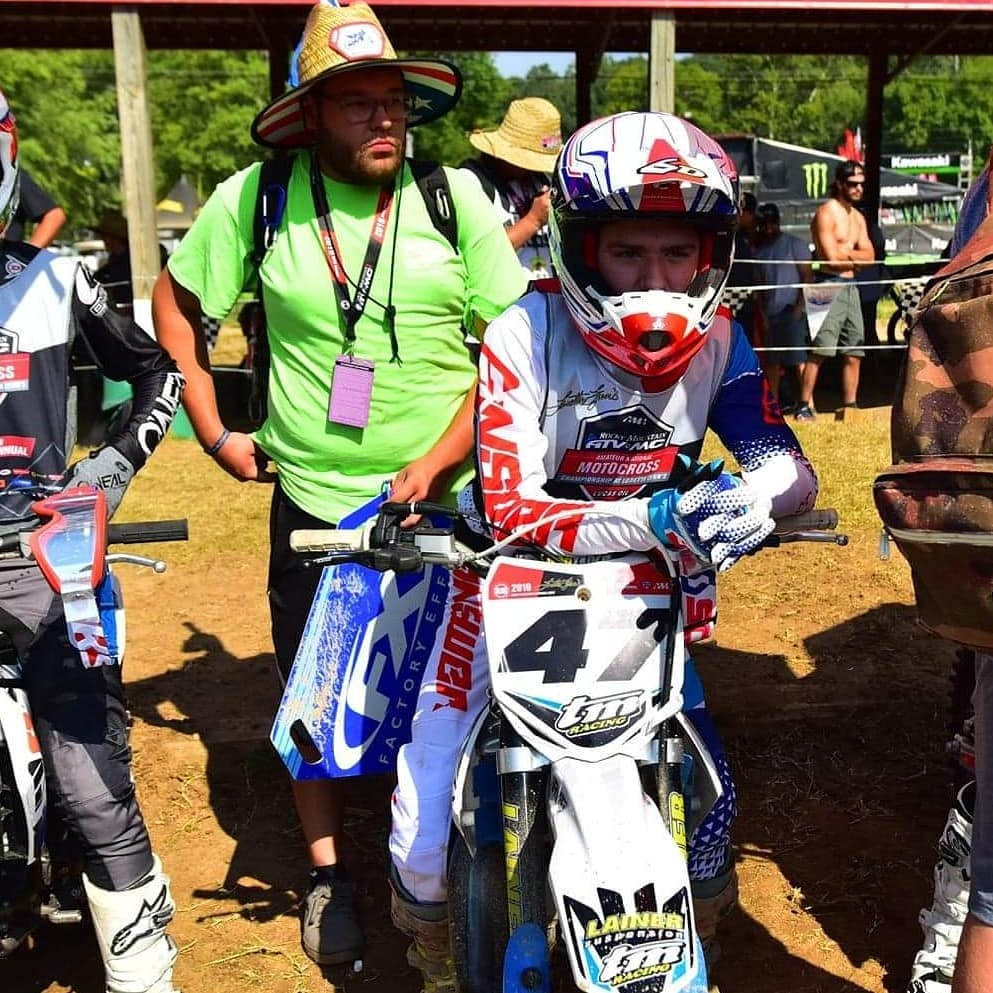

Hello and welcome to Holeshot Racing Dynamics. Here you will find everything you need to be competitive at your local track or national series. Dedicated to engine rebuilds, suspension rebuilds & everything in between. My name is Tyler Yadlosky, former race mechanic at De Corsa Racing & I run things here at HRD.
My name is Tyler Yadlosky. I grew up in North Eastern Pennsylvania & attended YTI Motorcycle Technology program in York, PA. Afterwards I moved back home to chase my dreams of working on motorcycles & offroad vehicles full time. Within 3 years I was in and out of 2 different motorsport dealerships in NEPA. I first started at North American Warhorse as a machine builder. Building machines out of their crates and onto their 2 or 4 wheels.
I then found a home at NEPA Powersports, a new-comer to the motorsport scene in my area as a builder. Then moved up to Level 1 Technician, then a Level 2. Afterwards moved to parts & service & then up into the sales department.
In the beginning of 2019 I had applied to a job on Indeed listed as a Race Mechanic position. Unenthusiastic, I kept an open mind doubting that my repertoire would land me the position. Despite being doubtful, I landed the job at De Corsa Racing as a race mechanic for Tytian Barnes.
